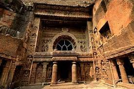
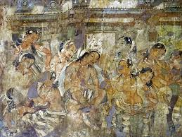
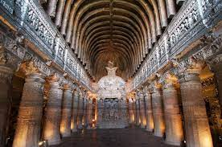
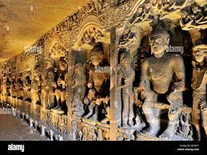
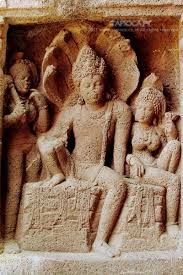
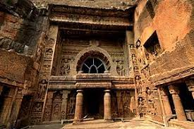
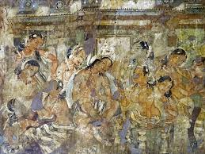
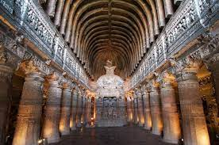
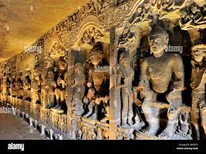
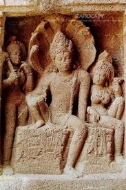

Aajanta Caves
The Ajanta Caves are 29 rock-cut Buddhist cave monuments dating from the second century BCE to about 480 CE in the Aurangabad district of Maharashtra state in India. Ajanta Caves are a UNESCO World Heritage Site.
The Ajanta Caves constitute ancient monasteries (Viharas) and worship-halls (Chaityas) of different Buddhist traditions carved into a 75-metre (246 ft) wall of rock.The caves also present paintings depicting the past lives and rebirths of the Buddha, pictorial tales from Aryasura's Jatakamala, and rock-cut sculptures of Buddhist deities. Textual records suggest that these caves served as a monsoon retreat for monks, as well as a resting site for merchants and pilgrims in ancient India. While vivid colours and mural wall paintings were abundant in Indian history as evidenced by historical records, Caves 1, 2, 16 and 17 of Ajanta form the largest corpus of surviving ancient Indian wall-paintings.